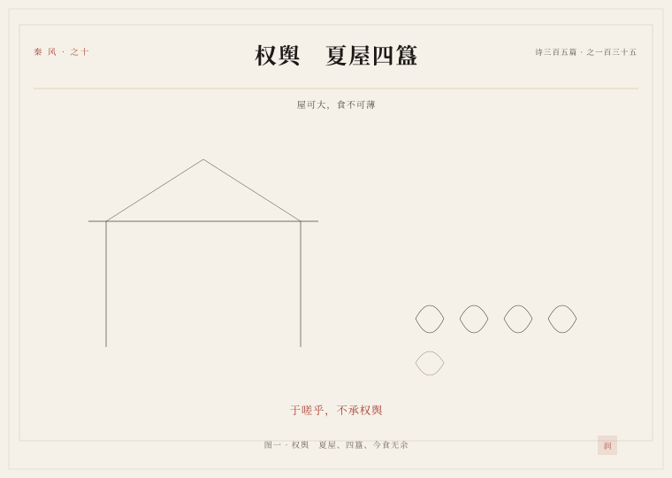
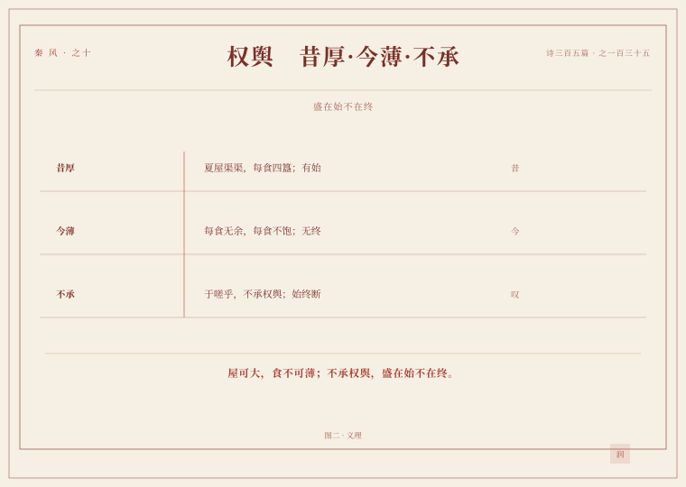

第一百三十五篇 权舆
秦风 · 之十 SJ135
朗读 · 普通话
依经文原文朗读，章次不读出；配古琴底乐，不改速、不加拖腔。全库同一音色（豆包 TTS），非播音员录制。
一 解题
诗三判：
- 谁在说：秦之旧臣，叹康公不承先君之旧。先言昔之屋食，次言今之无余不饱，末以「不承权舆」作收。
- 说什么事：二章只换「夏屋渠渠／每食四簋」与「无余／不饱」。昔有礼，今无礼；昔有终，今无终。
- 为何编在此：秦风十篇终。始以《车邻》之盛，终以《权舆》之衰；一盛一衰，秦风首尾相照。
《毛序》：“《权舆》，刺康公也。忘先君之旧臣与贤者，有始而无终也。”
朱子《诗集传》（大意）：赋也。权舆，始也；夏屋，大屋；渠渠，深广；四簋，礼食；承，继；不承权舆，不能继其始。
本库的看法：《权舆》是一首把「始」写成「不承」的诗。
夏屋渠渠、每食四簋，是始之礼；每食无余、不饱，是终之薄。礼不是屋与食，是「有终」。
断语：屋可大，食不可薄；不承权舆，盛在始不在终。
先辨五事：「权舆」是始，不是权柄；「夏屋」是大屋，不是夏代之屋；「渠渠」是深广，不是沟渠；「四簋」是礼食，不是四碗；「承」是继，不是承受。
二 经文
第一章
于我乎，夏屋渠渠，今也每食无余。
于嗟乎，不承权舆。
第二章
于我乎，每食四簋，今也每食不饱。
于嗟乎，不承权舆。
分章：二章，章五句。
三 韵读
- 一章：舆、余、舆，鱼部。一韵到底，叹声沉。
- 二章：簋、饱、舆，幽部。转幽，声更咽。
读法：二章以昔形今，韵随叹转；昔愈厚，今愈薄。
四 字义与名物
- 权舆：始。夏屋：大屋。渠渠：深广。每食无余：每餐没有剩余。
- 四簋：四器礼食。簋，食器。不饱：吃不饱。承：继。于嗟：叹词。
五 今译
在我这里啊，大屋深广；如今每餐没有剩余。可叹啊，不能继其始。
在我这里啊，每餐四簋；如今每餐吃不饱。可叹啊，不能继其始。
六 章旨
- 一章：写屋与食。夏屋渠渠，是待贤之厚；每食无余，是待贤之薄。一厚一薄，始与终分。
- 二章：写食与饱。四簋，是礼；不饱，是薄。一礼一薄，终不承始。
- 总收：二章皆以昔形今，以「不承权舆」一叹收；屋可大，食不可薄。
七 诗教
- 兴：无兴，直赋今昔；赋饮食，正是赋礼。
- 观：观国之衰，不在兵败，在待贤之薄；一食不饱，士心先散。
- 群：旧臣与新君相对；一不忘旧，一不承始。
- 怨：怨在「于嗟乎」；不骂，只叹，叹比骂冷。
八 分寸与边界
- 不可把「权舆」当权柄。它是始；一作权，全篇的今昔就成权力。
- 不可把「夏屋」当夏代之屋。它是大屋；一作夏代，今昔就成朝代。
- 不可把「四簋」当四碗。它是礼食；一作四碗，礼就成饭量。
- 不可把此诗只读作怨饭。它怨待贤之薄；一作饭，诗就成了口腹。
- 不可把「不承」当不承受。它是不继；一作承受，始与终就断了。
九 存疑
- 诗旨：毛序刺康公忘旧臣贤者，有始无终；朱子从之。本库从毛朱。
- 「权舆」：毛传「始也」。从始。
- 「夏屋」：毛传「大屋也」。从大屋。
- 「四簋」：毛传「四簋，黍稷稻粱」；从礼食。
十 跨典
- 《诗经·秦风·车邻》（SJ126）：首篇车马之盛，末篇饮食之薄；一盛一衰，秦风闭环。
- 《论语·学而》：“君子食无求饱，居无求安。”——士不患薄；此诗怨者，怨礼不继，不怨口腹。
- 《诗经·小雅·伐木》：“既有肥牡，以速诸舅。”——待贤以礼；此诗反之，礼薄则贤去。
十一 双卡与图
六对：
| 权舆（始） |
权舆（权柄） |
| 夏屋（大屋） |
夏屋（夏代） |
| 渠渠（深广） |
渠渠（沟渠） |
| 四簋（礼食） |
四簋（四碗） |
| 承（继） |
承（承受） |
| 不承（不继） |
不承（不承受） |

图一 · 权舆 夏屋、四簋、今食无余

图二 · 权舆 昔厚、今薄、不承
读图三处：
- 夏屋：图一大屋一区，梁柱三架，门一；屋要大，不画人。
- 四簋：图一食器四只，盖一，旁一空器；簋可数，礼不可虚。
- 二境：图二「昔厚／今薄」二列，中以断线隔开，末朱「不承权舆」；一厚一薄，终不承始。
断语：屋可大，食不可薄；不承权舆，盛在始不在终。